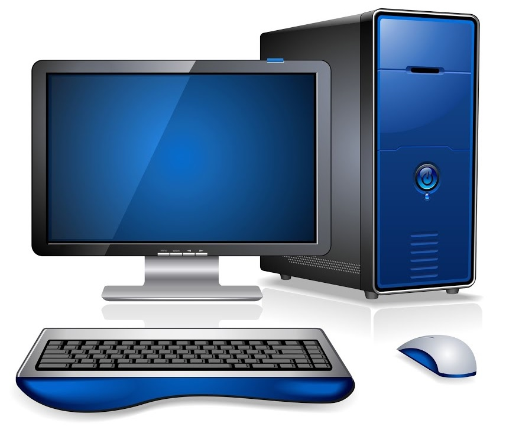

Computer Architecture
Computers

Computer is an electronic machine that can receive data and process it
into valuable information that it stores in different storage media, and it is
often able to exchange these results and information with other compatible devices.1
The main function of the computer can be described simply in the following steps:
- Input: entering data into the computer.
- Processing: performing operations on the data.
- Output: presenting the results.
- Storage: saving data, programs, or output for future use.

The Language of Computers: -
The commands are represented as data in the form of binary code.
For example, the code for a type of "copy" process in Intel x86 microprocessors
is 10110000. A partial command is configured so that a specific computer supports
what is known as machine language. The use of pre-simplified machine language has
made it easier to run programs on a new machine: thus on the market where
availability of commercial software is necessary, suppliers agree on one or a very
small number of prominent machine languages.
Machine language or machine code is a computer program written in machine
language instructions that can be implemented directly through the computer's
central processing unit (CPU). Each instruction causes the CPU to perform a very
specific task, such as loading or jumping or unit calculation operation and logic
on the data unit in the CPU or memory log.
The machine code is a purely digital language that aims to run as quickly as
possible, and it can be considered as the lowest level representing a compiled
or compiled computer program or as a basic programming language dependent on
computer hardware. While it is possible to write programs directly in the machine
code, it is boring and error to manage individual bits and manually calculate
numerically addresses and constants. For this reason, in modern contexts,
the software is rarely written directly into machine code, but it can be done to
debug low-level errors, produce a batch for a program, and analyze the assembly language.